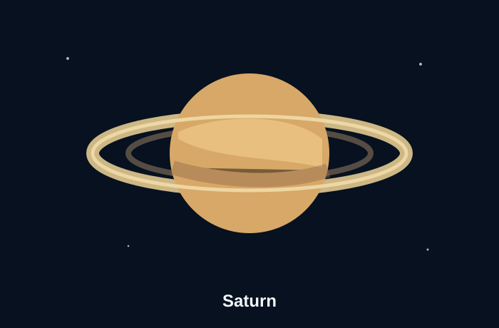

The ringed planet
Saturn is the sixth planet from the Sun and the second largest planet in the solar system. Its ring system makes it one of the easiest planets to recognize in images and diagrams. NASA Saturn Facts
Saturn is mostly made of hydrogen and helium. Like Jupiter, it is a giant planet, but its rings give it a unique appearance. The rings are not solid bands; they are made of many small pieces orbiting Saturn.
Required video reference
This video shows outer solar system planets using Hubble observations. The embedded video is included as a reference, and this page also links directly to the video with a timestamp: NASA/Hubble video at 0:00